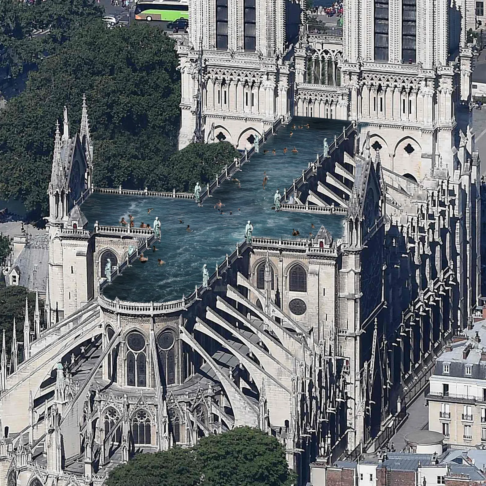
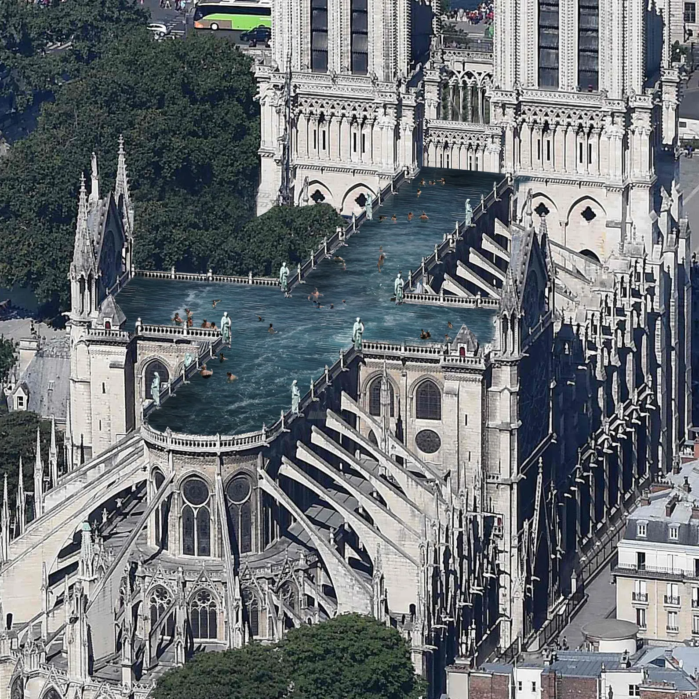

Welcome to Paris
Paris is the capital city of France and is known as the "City of Love" and the "City of Lights." Here are some of the must-visit attractions in Paris:
Eiffel Tower
The Eiffel Tower is an iconic landmark of Paris and one of the most recognizable structures in the world. Visitors can enjoy breathtaking views of the city from its observation decks.


Louvre Museum
The Louvre Museum is the largest art museum in the world and home to the famous painting, Mona Lisa. It showcases thousands of works of art and historical artifacts.
Notre-Dame Cathedral
Notre-Dame Cathedral is a masterpiece of Gothic architecture and one of the most famous cathedrals in the world. It is known for its stunning stained glass windows and gargoyles.
 

Montmartre
Montmartre is a historic neighborhood in Paris known for its bohemian atmosphere and the iconic Sacré-Cœur Basilica. It offers charming streets, art studios, and stunning city views.